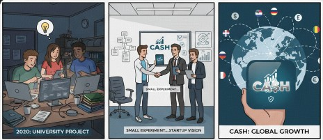
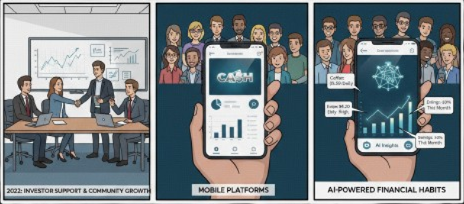
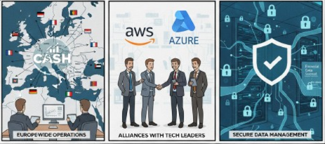
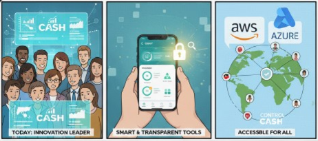

CASH nació en 2020 como un pequeño proyecto universitario en el que tres estudiantes de informática
buscaban crear una herramienta sencilla para gestionar gastos personales. Lo que comenzó como una idea
experimental pronto se transformó en una startup con visión internacional.

En 2022, gracias al apoyo de inversores y a una comunidad de usuarios en rápido crecimiento,
CASH dio el salto a plataformas móviles, implementando soluciones de inteligencia artificial
que ayudaban a los usuarios a entender sus hábitos financieros.

Durante los siguientes años, la compañía expandió sus operaciones a toda Europa y firmó alianzas
con instituciones bancarias y tecnológicas líderes, como AWS y Azure, garantizando seguridad y
eficiencia en la gestión de datos financieros.

Hoy, CASH es una referencia en innovación financiera digital. Nuestro compromiso es claro:
ayudar a cada persona a tomar el control de su economía con herramientas inteligentes,
transparentes y accesibles para todos.
🚀 Visión general del proyecto a futuro
El proyecto CASH busca evolucionar desde un sitio informativo hacia una
plataforma digital integral centrada en la gestión financiera inteligente.
En el futuro, se espera ampliar sus funciones, mejorar la experiencia de usuario
y ofrecer herramientas más completas para la organización económica personal y profesional.
Con estas metas, CASH pretende convertirse en una herramienta esencial para la
educación y administración financiera moderna, manteniendo su compromiso con la
accesibilidad, la seguridad y la innovación tecnológica.
Objetivos a medio y largo plazo 
-
Implementación de estilos visuales (CSS3):
Desarrollar una identidad visual moderna, coherente y adaptable a todo tipo de pantallas.
-
Interactividad mediante JavaScript:
Incorporar validación de formularios, menús interactivos, animaciones y simulaciones financieras.
-
Gestión de usuarios y autenticación real:
Añadir un sistema funcional de registro e inicio de sesión con medidas de seguridad avanzadas.
-
Panel de control financiero:
Implementar un dashboard para visualizar gastos, ingresos y estadísticas personalizadas en tiempo real.
-
Integración con bases de datos:
Usar tecnologías como MySQL o MongoDB para almacenar información y permitir configuraciones personalizadas.
-
Optimización de accesibilidad y SEO:
Mejorar la accesibilidad, el cumplimiento de los estándares del W3C y la visibilidad en buscadores.
-
Versión móvil mejorada:
Desarrollar una aplicación web progresiva (PWA) o app móvil para facilitar el uso desde cualquier dispositivo.